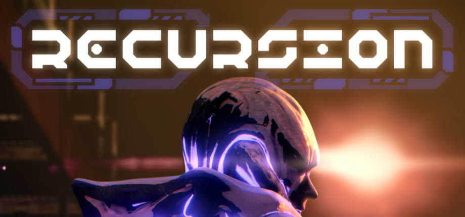

Team project
Recursion
Recursion is a first-person stealth shooter where you must find your way out of an alien research facility. The team consisted of me and nine other MSU students with the additional help of Bungie mentorship.

Team project
Recursion is a first-person stealth shooter where you must find your way out of an alien research facility. The team consisted of me and nine other MSU students with the additional help of Bungie mentorship.
